Bubble Wand
Let's write a program to design our own bubble wands, then print them!
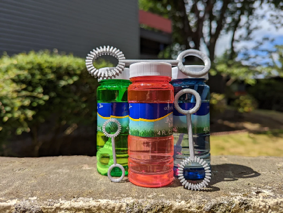
Overview
Instead of drawing a 3D model by hand, you'll write a program that builds one for you. In Tinkercad Codeblocks, each block adds, moves, or changes a shape, and pressing Play runs your program to draw the model. Over four class days you'll build the wand's ring, handle, and base, wire every size to a variable so one change can resize the whole wand, use a loop to add a ring of ridges, and export the design for the 3D printer.
Before you start
You'll need your Tinkercad login. Your design saves automatically, so each day you open the same Bubble Wand and keep going. A "Day 2 starts here" box marks each day's starting point, with a picture of what your screen should show before you begin.
You've got it when…
- Pressing Play draws a ring with evenly spaced ridges, a handle, and a round base, all one color.
- Every size comes from a variable, not a plain number, and no math block is inside another math block.
- Each section of your code starts with a comment saying what it builds.
- Changing
Thicknessonce rebuilds the whole wand thicker. - Your design is exported as an
.STLfile and submitted.
Collaboration & AI
Work: On your own. Ask a neighbor for a hand if you're stuck, but build your own wand.
AI — AIAS Level 1, No AI: This lab is about learning the blocks by placing them yourself, variables and loops included, so set AI aside this time. What the levels mean.
Create a Codeblocks Project
-
Go to Tinkercad and sign in.
-
Click Create, then Codeblocks.

-
Click the random name at the top of the screen and rename your project Bubble Wand.

Build the Ring
-
Drag a Cylinder
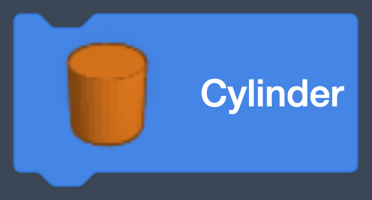
from Shapes into the workspace.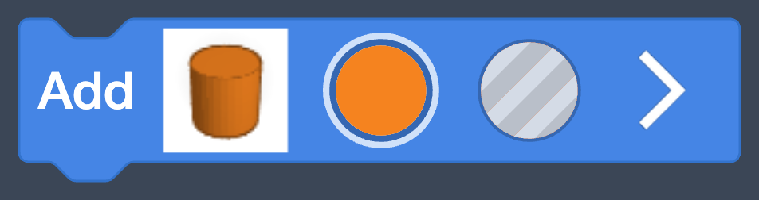
-
Click the arrow
 on the block to unfold its parameters, the numbers that control the
shape.
on the block to unfold its parameters, the numbers that control the
shape.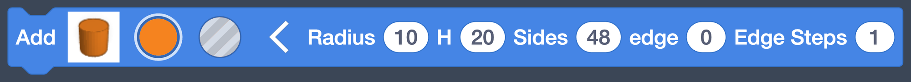
-
Click Play
 .
.Your screen should look like this.
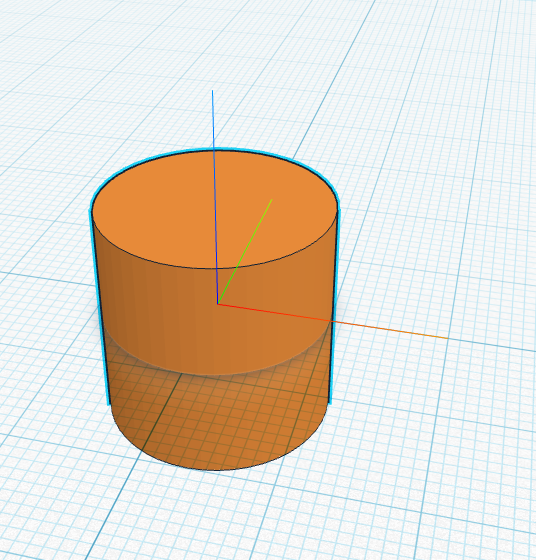
-
Change H (height) to
2.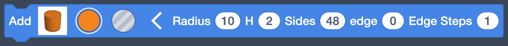
-
Click the hole button
 on the block. A hole cuts away from other shapes instead of adding
to them. This one will be the opening in the ring.
on the block. A hole cuts away from other shapes instead of adding
to them. This one will be the opening in the ring.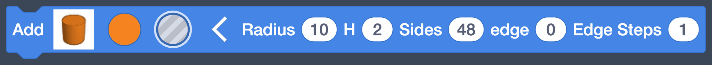
-
Click Play.
Your screen should look like this.
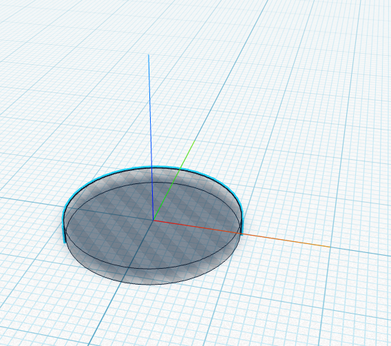
-
Drag a second Cylinder under the first one, unfold it, and set its Radius to
12and H to1. Leave it solid.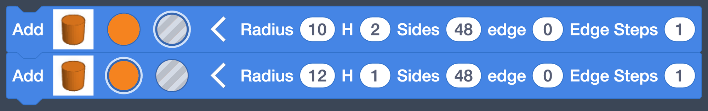
-
Click Play.
Your screen should look like this.
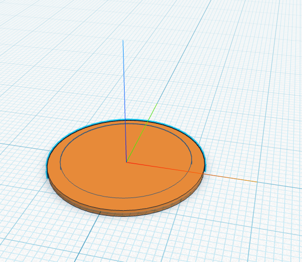
Why the hole is taller
The hole is 2 tall and the ring is only 1 tall, so the hole pokes out above and below and cuts all the way through. A hole exactly the same height can leave a paper-thin skin behind.
-
Drag a Tube
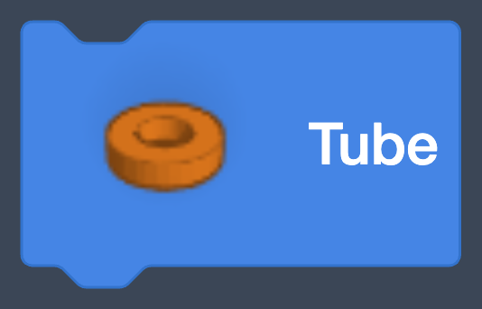
under the second cylinder, unfold it, and set Radius21, Wall Thickness10, H2, and click its hole button. This tube trims the outside of the ring to a clean circle.
-
Click Play.
Your screen should look like this.
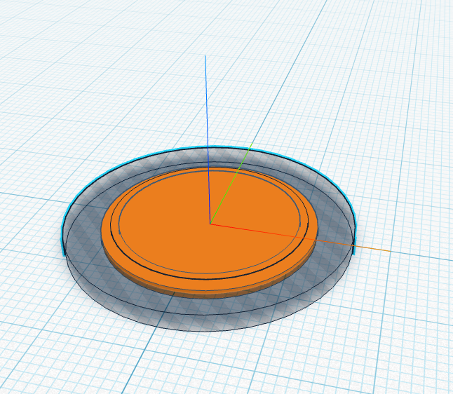
-
Drag a Group Selection
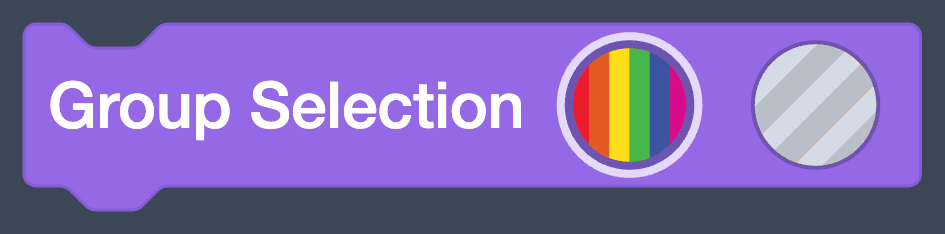
from Modify under the tube. Group combines everything above it into one shape, and that's when the holes actually cut.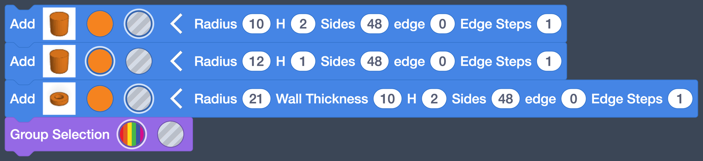
-
Click Play.
Your screen should look like this.
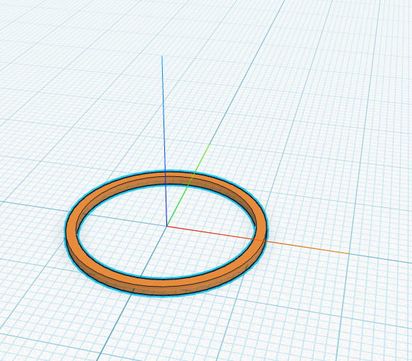
Day 2 starts here
Open your Bubble Wand design in Tinkercad and click Play. Your screen should look like this. If it doesn't, finish Day 1 first.
Give the Sizes Names
Right now every size is a plain number. A variable stores a number under a name, so you can use the name everywhere and change the number in one place.
-
Click Variables and click Create number variable….
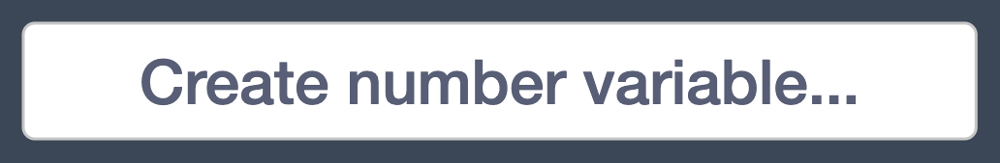
-
Name it
InnerRadiuswith no spaces and click Create.
Warning
Variable names can't contain spaces.
InnerRadiusworks;Inner Radiuswon't. -
Drag the Set block
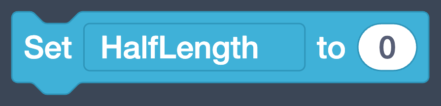
into an empty part of the workspace, above your ring blocks, and setInnerRadiusto10.
-
Make three more variables the same way, and add a Set block for each under the first:
Thickness1,OuterRadius11, andOverflow5. The dropdown on a Set block picks which variable it sets.
Warning
The Set blocks must be above the ring blocks. Codeblocks runs from the top of the workspace down, so a variable has to be set before the shapes that use it.
-
Drag the round
InnerRadiusblock from Variables onto the Radius of the first cylinder. It replaces the10.
-
Drag a math block
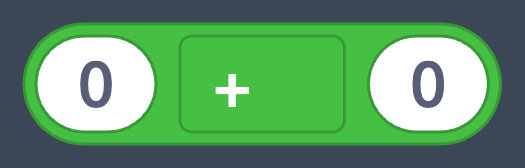
from Math onto the H of the first cylinder. -
Drag
Thicknessinto the first space of the math block.
-
Change the
0to1. The hole is nowThickness + 1tall: always one taller than the ring, however thick the ring gets. -
Set the second cylinder's Radius to
OuterRadius + 1and its H toThickness, the same way.
-
Set the tube's Radius to
OuterRadius + Overflow, its Wall Thickness toOverflow, and its H toThickness + 1. -
Click Play.
Your screen should look like this.
So what did we gain?
The ring looks the same. The difference is invisible for now: every size traces back to four named numbers. On Day 4 you'll change one variable and watch the whole wand rebuild itself.
Label Your Code
Comments are notes for people. The computer ignores them.
-
Drag a Comment block from Mark Up onto the top of your Set blocks and type
Variablesin it.
-
Add a second Comment on top of the ring blocks that says
The ring.
Day 3 starts here
Open your Bubble Wand and click Play. The wand still looks like the
ring from Day 1, and your code should start with a Variables comment
above four Set blocks, then a The ring comment above the ring
blocks. If it doesn't, finish Day 2 first.
Build the Handle
The handle is a long, thin cylinder lying on its side. We'll need two new variables for it.
-
Create a variable named
Lengthand add a Set block at the bottom of your Variables section:Lengthto30. -
Create a variable named
HalfLength. Add a Set block for it, drag a math block into its slot, and buildLength / 2. Click the+on the math block to change it to/.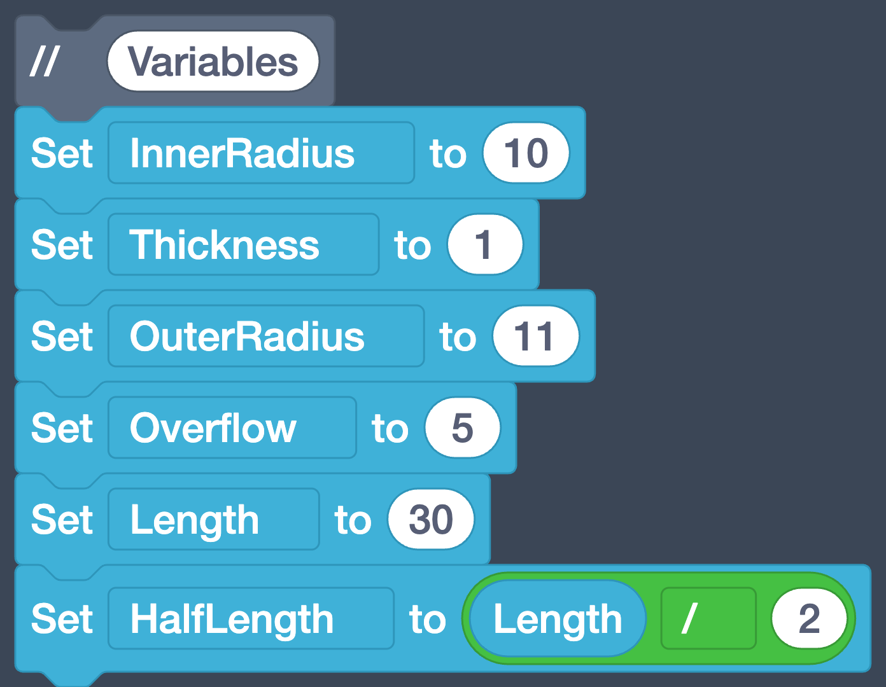
Why HalfLength gets its own variable
Math blocks can sit inside other math blocks, but that's where bugs hide. These two blocks read the same, and they give different answers:
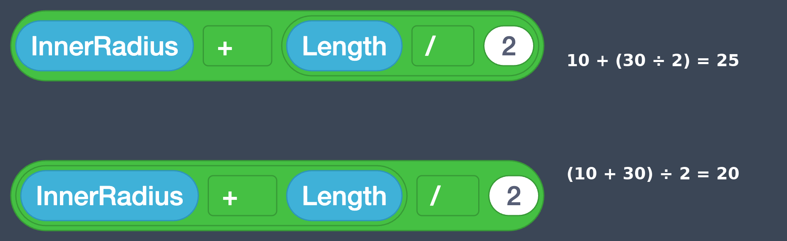
Codeblocks always does the inside block first. With
InnerRadius10 andLength30, the top one is 10 + 15 = 25 and the bottom one is 40 / 2 = 20. You can't tell which you built by reading the words; you have to look at the outlines. We skip the problem: give the middle step its own variable, and every math block only ever holds two things. -
Start a new section below the ring: a Comment that says
The handle, with a Cylinder under it. Unfold the cylinder and set Radius toThickness.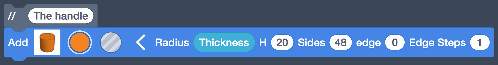
-
Set its H to
Length.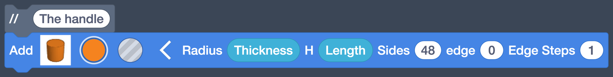
-
Click Play.
Your screen should look like this.
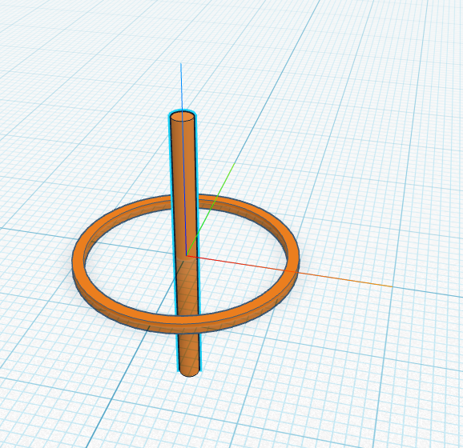
-
Drag a Rotate around block
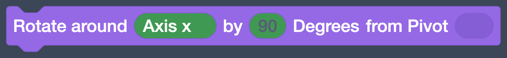
from Modify under the cylinder. Leave it at Axis x and90degrees.
-
Click Play.
Your screen should look like this.
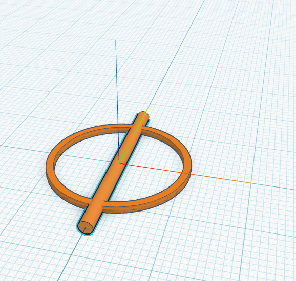
-
Drag a Move block
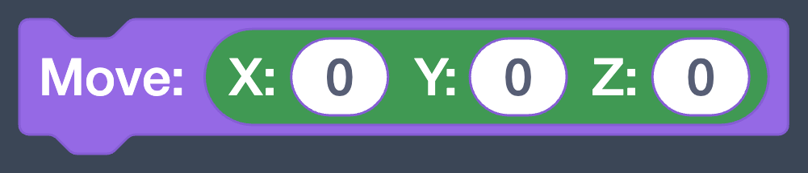
from Modify under the rotate.
-
Drag a math block into the Y slot of the Move block.
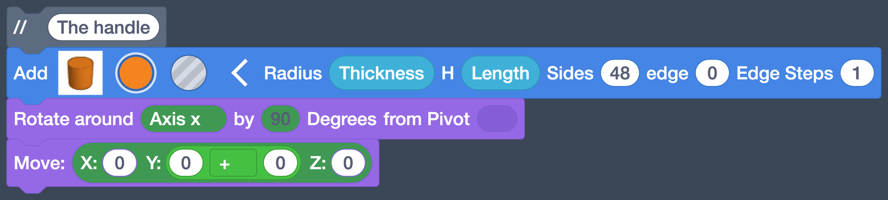
-
Fill it in:
InnerRadius + HalfLength. That slides the handle out of the middle until its end just touches the inside of the ring.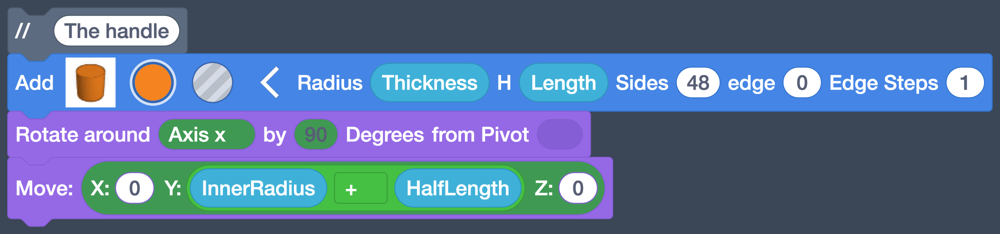
-
Click Play.
Your screen should look like this.
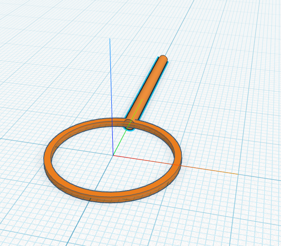
Build the Base
-
Create one more variable,
HandleEnd, and set it at the bottom of your Variables section toInnerRadius + Length. That's how far the handle reaches from the center.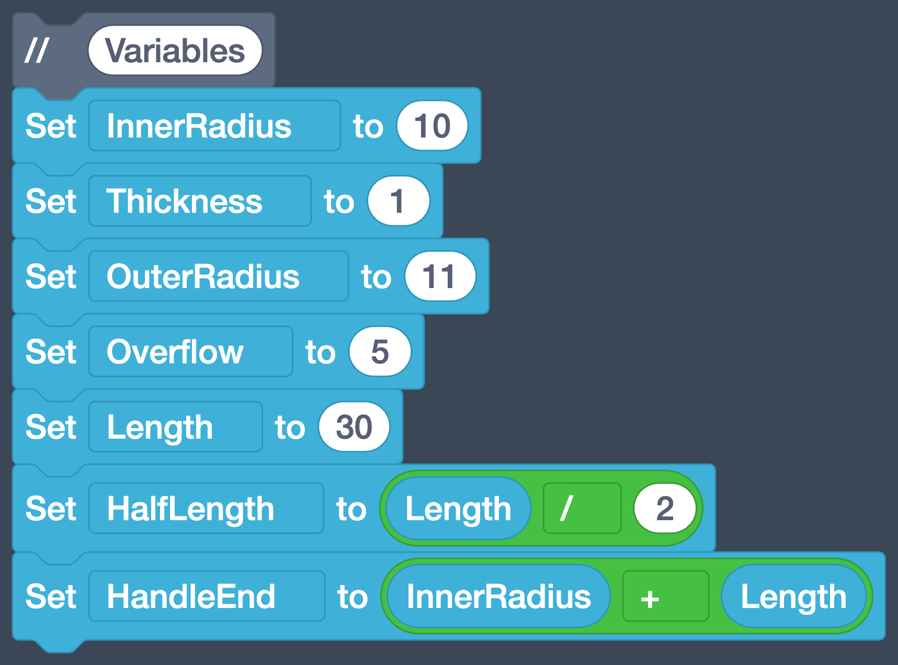
-
Start a new section: a Comment that says
The base, with a Torus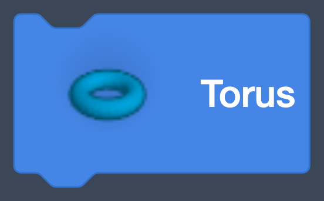
under it. Unfold it and set Radius toInnerRadiusand Tube toThickness.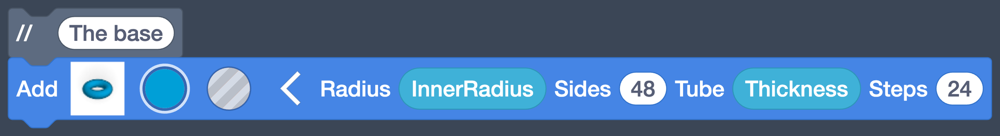
-
Click Play.
Your screen should look like this.
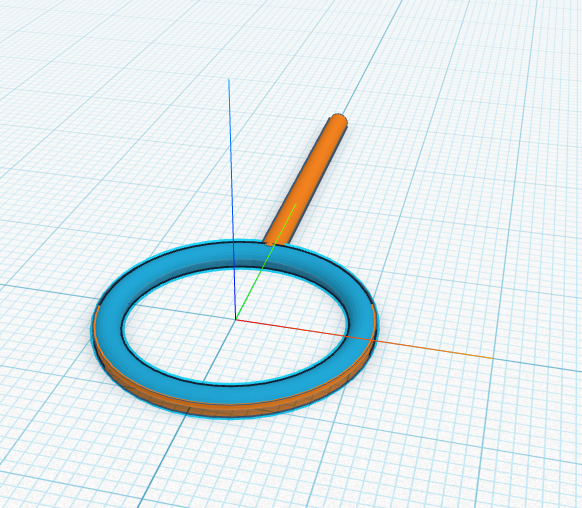
-
Add a Move block under the torus with Y set to
HandleEnd + InnerRadius.
-
Click Play.
Your screen should look like this.
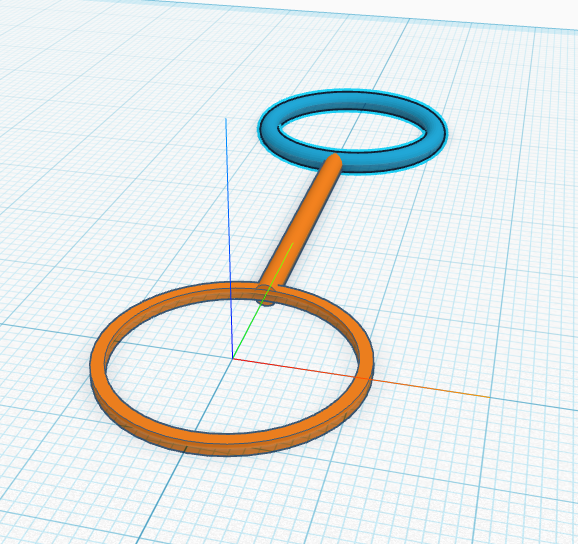
-
Click the color circle on the torus block and pick the same orange as the rest of the wand.
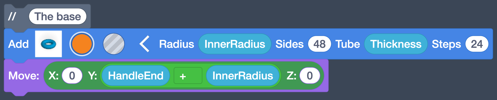
-
Click Play.
Your screen should look like this.
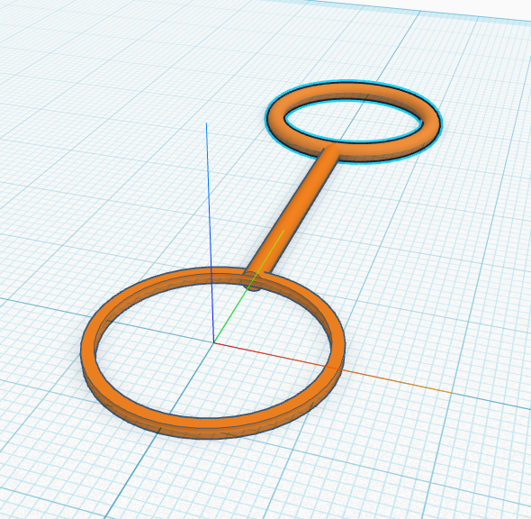
Checkpoint
Ring, handle, base, one color, all from code. Your whole program should look like this.
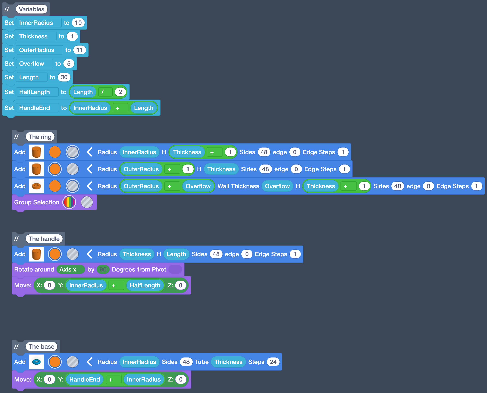
Day 4 starts here
Open your Bubble Wand and click Play. Your screen should look like this. If it doesn't, finish Day 3 first.
Adding Ridges
Look back at the printed wands at the top of this page. Their rings have ridges. Placing those by hand would be tedious, and tedious jobs are what computers are for: a loop repeats a set of blocks for you.
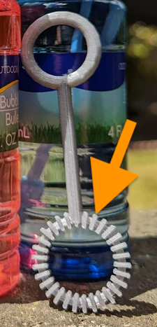
Each ridge is a small box: half as wide as the ring is thick, long enough to poke out both sides, and twice as tall. We'll give those three sizes names first, so the box block stays simple.
-
Create three variables and set them at the bottom of your Variables section:
RidgeWidthtoThickness / 2,RidgeLengthtoOuterRadius * 2.2, andRidgeHeighttoThickness * 2. Click the+on a math block to change it to/or*.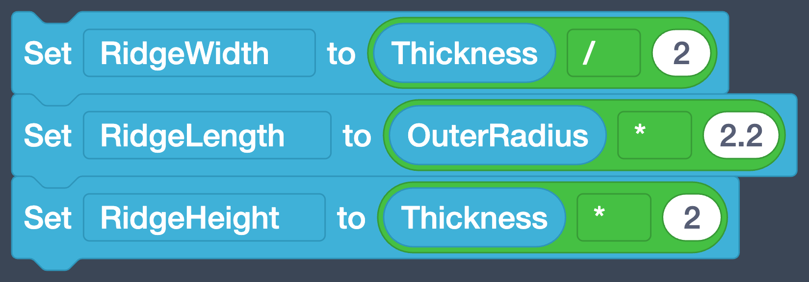
-
Drag a Box
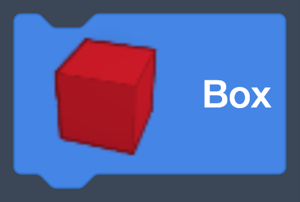
under the Group Selection at the end of The ring. Unfold it and set W toRidgeWidth, L toRidgeLength, and H toRidgeHeight.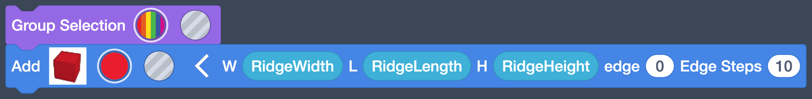
-
Click Play.
Your screen should look like this.
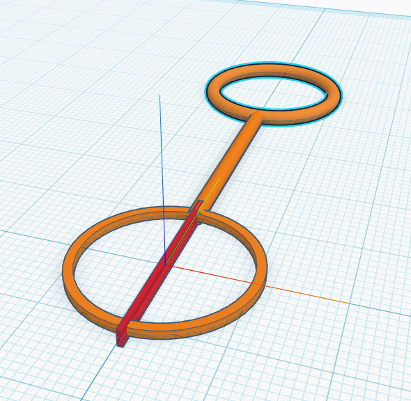
One ridge. Now let's repeat it around the ring, like the spokes of a wheel.
-
Drag a Count with block
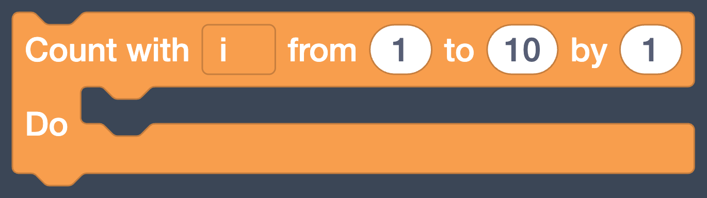
from Control into an empty spot, then drag your Box into the loop's mouth (the gap after Do). Snap the loop under Group Selection.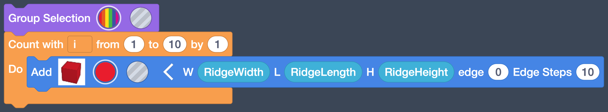
The loop's counter
The loop creates a variable for us named
i. Each time around,iis set to the next number in the from and to range, and we can use it inside the loop. -
Drag a Rotate around block inside the loop, under the box.
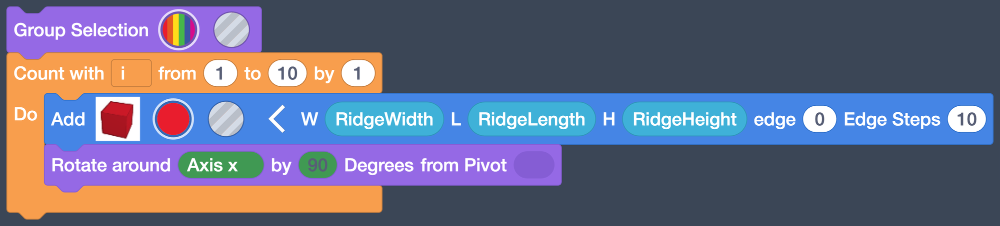
-
Change Axis x to Axis z, then drag the round
iblock from Variables onto the by number.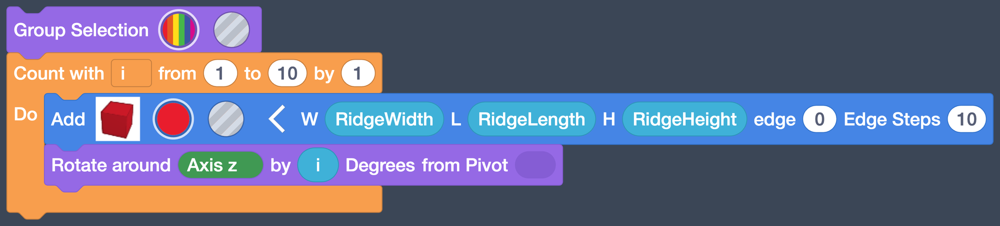
-
Set the loop to count from
0to179by10.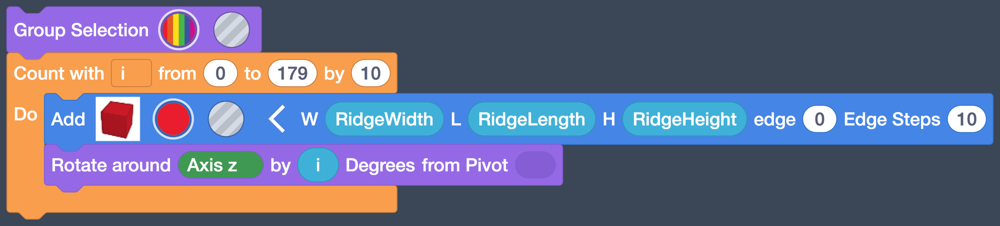
-
Click Play.
Your screen should look like this.
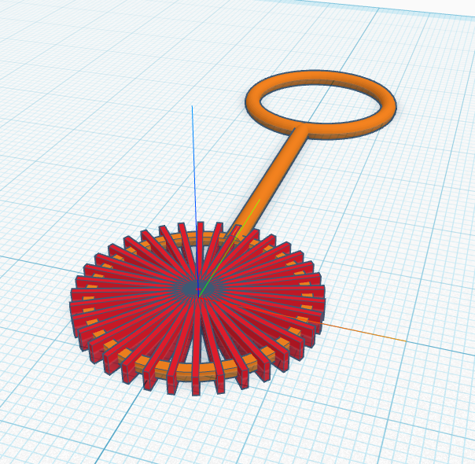
The loop adds a box and turns it
idegrees, for everyifrom 0 to 179 in steps of 10. Each box pokes out both sides, so 180 degrees covers the whole ring. -
Change the by to
12to leave a little more space between ridges.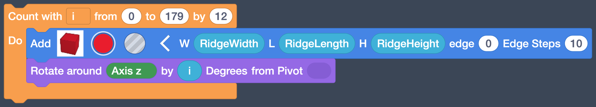
-
Click Play.
Your screen should look like this.
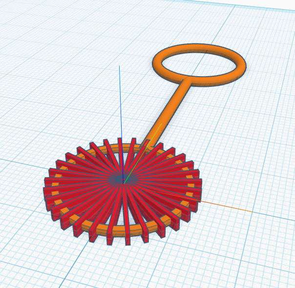
Trimming the Middle
The ridges cross through the middle of the ring. A hole cylinder, a little smaller than the opening and taller than the ridges, will cut them back.
-
Create two more variables and set them at the bottom of the Variables section:
CutRadiustoInnerRadius - RidgeWidthandCutHeighttoThickness * 3.Order matters for minus
InnerRadiusgoes in the left space andRidgeWidthin the right.RidgeWidth - InnerRadiusis a negative number, and a cylinder with a negative radius is not a cylinder. For+and*the order doesn't matter; for-and/it always does. -
Drag a Cylinder under the loop, unfold it, click its hole button, and set Radius to
CutRadiusand H toCutHeight. Then drag a Group Selection under the cylinder. -
Click Play.
Your screen should look like this.
One Change, Whole Wand
The wand looks a bit fragile. Let's make it thicker everywhere. Instead of changing every piece, we change one variable at the top of the program, and every block that uses it rebuilds.
-
Change Set Thickness from
1to2. -
Click Play.
Your screen should look like this.
Checkpoint
Ridges from a loop, and a thicker wand from one number. Your whole program should look like this. Compare it with the Day 3 checkpoint above: the only new blocks are in The ring and Variables.
Tip
Try changing some other variables to customize your bubble wand. Bigger
Overflow, longer Length, more or fewer ridges.
Preparing for 3D Printing
We need to export our design in a format the 3D printing software can use.
-
Click Share in the upper right corner.
-
Select .STL.
-
Submit your downloaded
.STLfile in Google Classroom.
Turn It In
- Your bubble wand's
.STLfile, submitted in Google Classroom.
Tinkercad saves the design itself to your account automatically; there is nothing else to upload.
Credit: Adapted and updated from this tutorial.
How It's Graded
This lab is worth up to 4 points. One score covers everything you turn in.
| Score | What it looks like |
|---|---|
| 4 — Excellent | The .STL opens as a complete wand: ring, handle, round base, and evenly spaced ridges trimmed clean inside the ring, all one color. Every size comes from a variable with no plain numbers left behind and no math block inside another; the ridges come from one box inside a Count with loop rotated by i; each section opens with a comment; and changing Thickness rebuilds the whole wand. |
| 3 — Above Average | A complete ridged wand with a slip or two: a plain number where a variable belongs, a section missing its comment, ridges that overlap because by stayed at 10, or a cut cylinder that leaves stubs. |
| 2 — Average | A real gap: the wand is missing a part, the ridges were placed by hand instead of by a loop, the middle isn't trimmed, or the parts are sized with plain numbers instead of the variables. |
| 1 — Below Average | Only the ring draws, the program doesn't produce a recognizable wand when Play is pressed, or no .STL was exported. |
| 0 — Failing | No .STL submitted and no Bubble Wand design in your Tinkercad account, or a file that isn't a wand. |